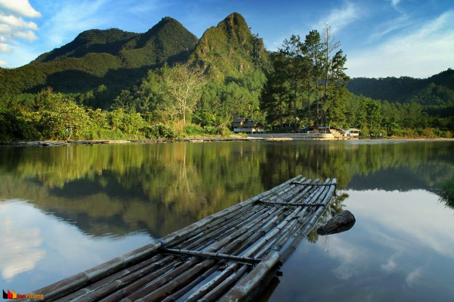
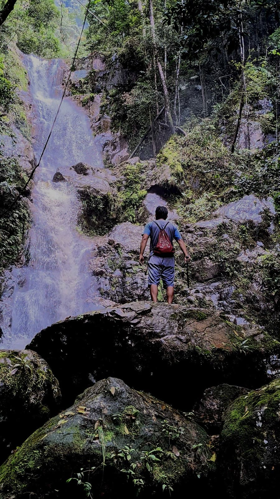
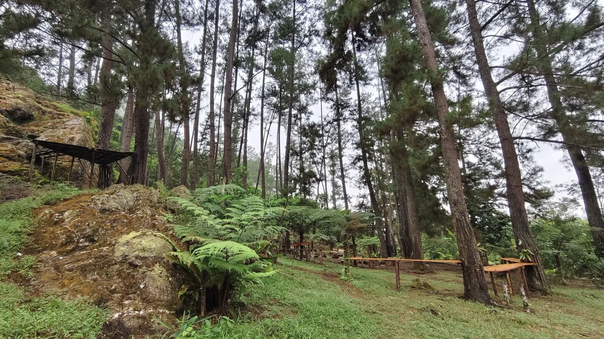

Most PopularSungai Kapalo Banda
Lanskap utama dengan aliran air tenang, rakit bambu, dan panorama bukit yang menjadi ikon visual WAKANDA.
Temukan ketenangan abadi di Kapalo Banda, tempat aliran sungai yang jernih, hamparan bukit hijau, dan suasana alam tropis menyatu menjadi pengalaman wisata yang menyegarkan jiwa.
Tiga sudut terbaik Kapalo Banda yang dirancang untuk memberi kesan pertama yang kuat, tenang, dan tak terlupakan bagi setiap pengunjung.

Most PopularLanskap utama dengan aliran air tenang, rakit bambu, dan panorama bukit yang menjadi ikon visual WAKANDA.

Jalur petualangan yang menyatu dengan batu alam dan hutan lebat.

Area santai dan trekking ringan dengan udara yang sejuk sepanjang hari.
Dari petualangan memacu adrenalin hingga momen tenang di tengah alam, WAKANDA menawarkan ritme wisata yang lengkap.
Menyusuri sungai dengan rakit bambu tradisional sambil menikmati panorama bukit dan aliran air yang jernih.
Trek ringan hingga menengah melewati hutan pinus, sungai kecil, dan jalur alami yang memikat untuk dieksplor.
Nikmati sajian khas Minang dalam suasana santai yang natural, cocok untuk melengkapi perjalanan keluarga.
Jadwalkan kunjungan Anda sekarang dan biarkan alam memulihkan energi. Kapalo Banda menghadirkan pengalaman yang cocok untuk keluarga, komunitas, maupun perjalanan singkat akhir pekan.
Tanyakan ke pengelola untuk ketersediaan alat trekking, sewa ban, dan panduan perjalanan privat.
Konten lengkap dapat dibuka dari halaman aktivitas.html.
Buka Halaman AktivitasKonten lengkap dapat dibuka dari halaman galeri.html.
Buka Halaman GaleriKonten lengkap dapat dibuka dari halaman informasi.html.
Buka Halaman InformasiKonten lengkap dapat dibuka dari halaman faq.html.
Buka Halaman FAQKonten lengkap dapat dibuka dari halaman kontak.html.
Buka Halaman KontakKonten lengkap dapat dibuka dari halaman ulasan.html.
Buka Halaman Ulasan